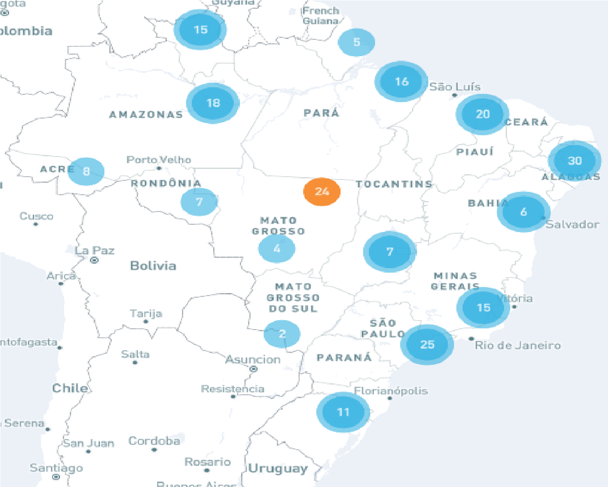

Saúde e Bem-Estar
Aplicando o terceiro Objetivo de Desenvolvimento Sustentável no Brasil
Sobre o Projeto
A Organização da Nações Unidas (ONU), jntamente com seus associados brasileiros, estão realizando atividades no país a fim de atingir os Objetivos de Desenvolvimento Sustentável, que se trata de 17 objetivos voltados às dificuldades enfrentadas pelos países para alcançar o desenvolvimento. Desses objetivos, o terceiro é voltado à Saúde e ao Bem-Estar, com o intuito de garantir o acesso à saúde de qualidade e promover o bem-estar para todos, em todas as idades.
Metas do Projeto
Para alcançar esse objetivo, a ONU estabeleceu algumas metas a serem atingidas até 2030:
- Reduzir a taxa de mortalidade materna global para menos de 70 mortes por 100.000 nascidos vivos;
- Acabar com as mortes evitáveis de recém-nascidos e crianças menores de 5 anos, com todos os países objetivando reduzir a mortalidade neonatal para pelo menos 12 por 1.000 nascidos vivos e a mortalidade de crianças menores de 5 anos para pelo menos 25 por 1.000 nascidos vivos;
- Acabar com as epidemias de AIDS, tuberculose, malária e doenças tropicais negligenciadas, e combater a hepatite, doenças transmitidas pela água, e outras doenças transmissíveis;
- Reduzir em um terço a mortalidade prematura por doenças não transmissíveis via prevenção e tratamento, e promover a saúde mental e o bem-estar;
- Reforçar a prevenção e o tratamento do abuso de substâncias, incluindo o abuso de drogas entorpecentes e uso nocivo do álcool;
- Reduzir pela metade as mortes e os ferimentos globais por acidentes em estradas;
- Assegurar o acesso universal aos serviços de saúde sexual e reprodutiva, incluindo o planejamento familiar, informação e educação, bem como a integração da saúde reprodutiva em estratégias e programas nacionais;
- Atingir a cobertura universal de saúde, incluindo a proteção do risco financeiro, o acesso a serviços de saúde essenciais de qualidade e o acesso a medicamentos e vacinas essenciais seguros, eficazes, de qualidade e a preços acessíveis para todos;
- Reduzir substancialmente o número de mortes e doenças por produtos químicos perigosos, contaminação e poluição do ar e água do solo;
- Fortalecer a implementação da Convenção-Quadro para o Controle do Tabaco em todos os países, conforme apropriado;
- Apoiar a pesquisa e o desenvolvimento de vacinas e medicamentos para as doenças transmissíveis e não transmissíveis, que afetam principalmente os países em desenvolvimento, proporcionar o acesso a medicamentos e vacinas essenciais a preços acessíveis, de acordo com a Declaração de Doha, que afirma o direito dos países em desenvolvimento de utilizarem plenamente as disposições do acordo TRIPS sobre flexibilidades para proteger a saúde pública e, em particular, proporcionar o acesso a medicamentos para todos;
- Aumentar substancialmente o financiamento da saúde e o recrutamento, desenvolvimento e formação, e retenção do pessoal de saúde nos países em desenvolvimento, especialmente nos países menos desenvolvidos e nos pequenos Estados insulares em desenvolvimento;
- Reforçar a capacidade de todos os países, particularmente os países em desenvolvimento, para o alerta precoce, redução de riscos e gerenciamento de riscos nacionais e globais de saúde.
Atividades em Andamento
Até o ano de 2022, o Brasil já possuía um total de 24 atividades empregadas em nível nacional e 189 atividades implementadas em diferentes localidades em todo o país, conforme ilustra a imagem abaixo:

Em laranja, atividades empregadas em nível nacional e, em azul, atividades com localidades detalhadas
Recursos, Investimentos e Parceiros Associados no Brasil
Até 2022, o Brasil possuía um total de $191,3 milhões em recursos disponíveis para uso nos Objetivos de Desenvolvimento Sustentável, dos quais 11,8% - média de $22,5 milhões - são reservados à Saúde e Bem-Estar.
Essas ações contam com o apoio de parceiros Contribuintes e Implementares. Para atingir o terceiro objetivo, os Parceiros Contribuintes que se destacam são UNICEF Other Resources, UNHCR Multidonor, Fundo Global para o Meio Ambiente (GEF), Agência Brasileira de Cooperação, The US Government Department of States - Bureau of Population, Refugees and Migration e os Governos dos Estados da Bahia, Piauí e Rondõnia. Já os Parceiros Implementares são a Agência Adventista de Desenvolvimento e Recursos Assistenciais (ADRA), Associação dos Voluntários para o Serviço Internacional (AVSI), Cáritas Arquidiocesana de São Paulo e do Rio de Janeiro e os Ministérios do Meio Ambiente, da Cidadania e das Mulheres, da Famiília e dos Direitos Humanos.Além desses, o Ministério da Saúde também atua nesse projeto, sendo um parceiro tanto Contribuinte quanto Implementar.